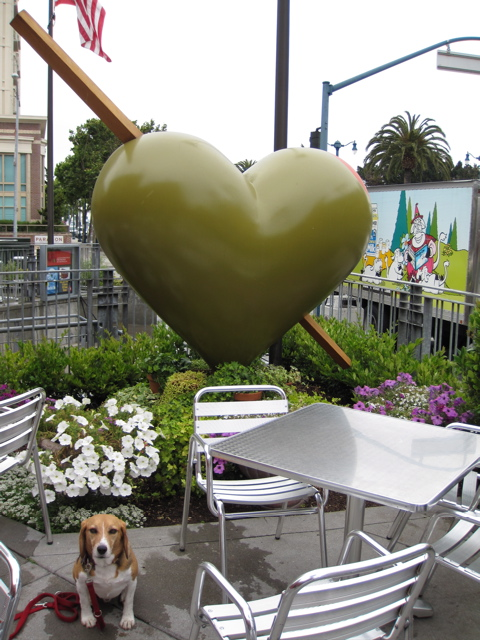

<--Previous Up Next-->

Seismically Shaken
By Tim Yankosky and Rich Stangl. Now located at Momo's, across from the baseball park. This heart is positioned to be seen from the street, but we had to go up on the porch to get Huxley in to the picture, so you can only barely tell that this the heart is a pimiento-stuffed olive.